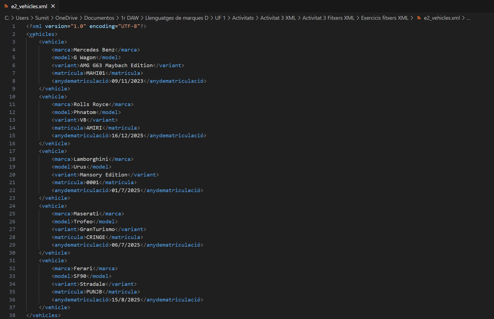
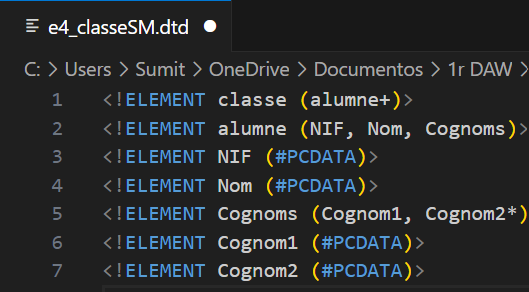
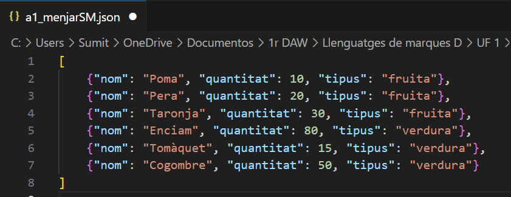
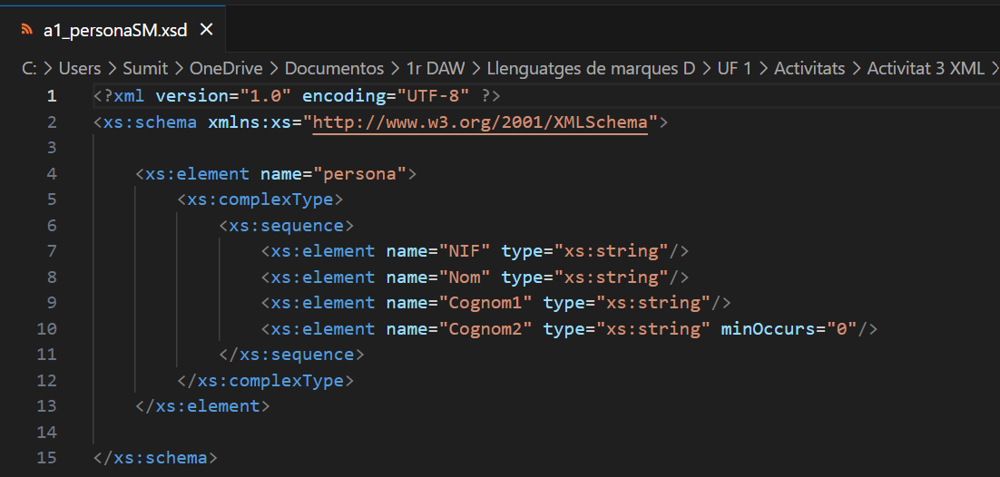

Pàgina Exercicis
Exercicis fitxers XML En aquesta pràctica he après coses sobre XML. Vaig aprendre sobre etiquetes de XML. |
Exercicis XML amb DTD En aquests pràctica he après sobre DTD, com enllaçar un fitxer DTD amb XML i com comprovar amb el validador si el fitxer és correcte o hi ha errors. |
Pràctica JSON En aquesta pràctica he après sobre Json. Etiquetes, esquema i com validar-lo. |
Pràctica XML amb XSD En aquesta pràctica vaig aprendre sobre XSD. Com enllaçar el fitxer XSD amb XML i validar-lo. |
Pràctica YAML Markdown
En aquesta pràctica he après sobre YAML. Com és diferent YAML d'HTML i altres llenguatges. Vaig aprendre sobre etiquetes, esquemes, etc. |
|